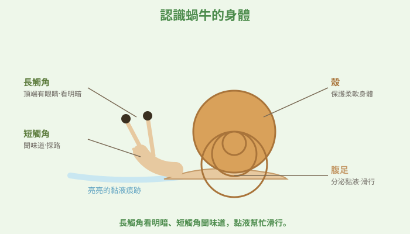
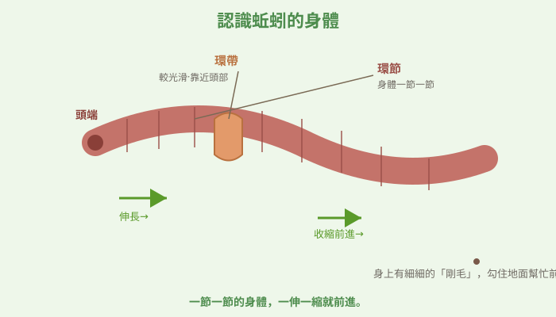
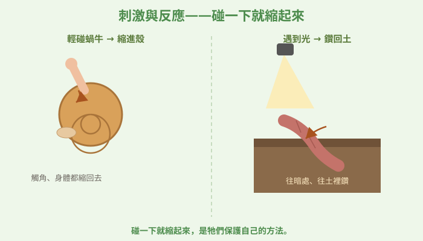
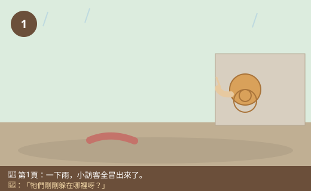
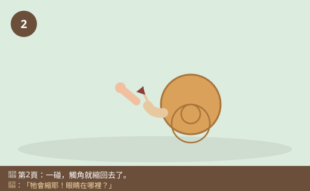
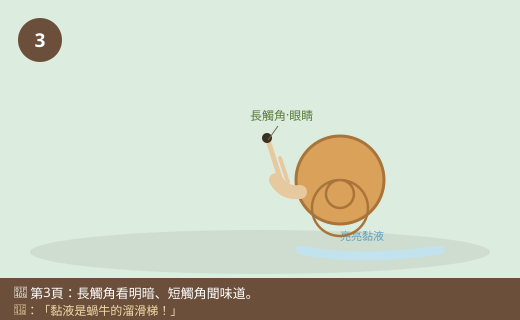
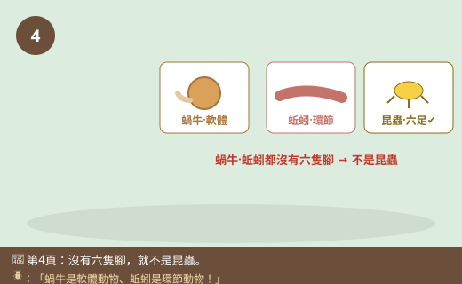
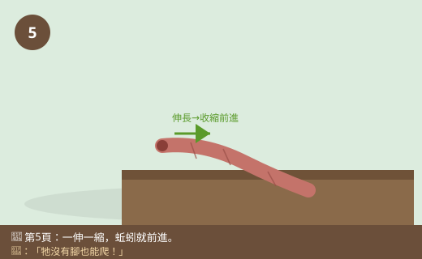
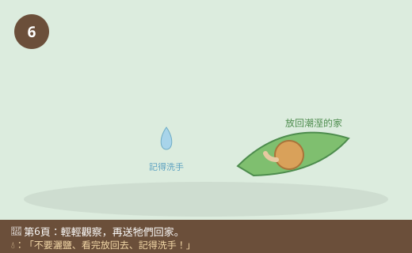

圖一（構造圖）：認識蝸牛的身體

- 圖像目的
- 認識蝸牛的主要構造與各部位功能。
- 圖中應出現的元素
- 蝸牛側面：螺旋殼、柔軟腹足、長觸角（頂端眼點）、短觸角、身後黏液亮痕。
- 必須標示的科學概念
- 兩對觸角功能不同；腹足＋黏液爬行；軟體動物。
- 圖說
- 「長觸角看明暗、短觸角聞味道，黏液幫忙滑行。」
- AI 繪圖提示詞
- 溫暖手繪繪本風，蝸牛側面清楚標示殼、腹足、長短兩對觸角、黏液痕跡。繁體中文標籤，白底。
- 避免畫錯的提醒
- 蝸牛有兩對（四根）觸角，眼睛在長觸角頂端；不要畫成昆蟲六足。
💡 下過雨後，蝸牛慢慢爬上牆、蚯蚓鑽出土地。牠們平常躲到哪去了？為什麼一下雨就冒出來？這兩位軟綿綿的小訪客，身上藏著好多有趣的祕密！
| 適合年級 | 國小三年級 |
|---|---|
| 可銜接年級 | 三年級 → 四年級（動物的分類）→ 國中生物分類與多樣性 |
| 主題分類 | 動物與昆蟲 |
| 核心概念 | 蝸牛、蚯蚓的構造與運動；動物接受刺激會有反應；喜歡潮溼環境 |
| 關鍵詞 | 蝸牛、蚯蚓、觸角、黏液、潮溼、刺激與反應 |
| 可銜接的國中概念 | 無脊椎動物、生物分類、生物對環境的適應 |
| 建議閱讀時間 | 約 15 分鐘 |
| 適合搭配的課堂活動 | 雨後校園觀察、蝸牛爬行觀察、蚯蚓與土壤箱 |
一場大雨剛停，太陽從雲縫探出頭。小狐同學撐著剛收起來的傘走進校園，忽然「啊」地停下腳步——地上、牆上，好多小訪客都出來了！一隻蝸牛正背著牠的殼，慢慢地、慢慢地往牆上爬，走過的地方留下一條亮晶晶、溼溼的痕跡。花圃邊的泥土上，一條紅褐色的蚯蚓扭來扭去，努力想鑽回土裡。
「好神奇喔！」小狐同學蹲下來看，「平常都沒看到牠們，怎麼一下雨就全跑出來了？牠們剛剛躲在哪裡呀？」他伸出手指，輕輕碰了一下蝸牛的觸角——那對長長的觸角「咻」地一下就縮了回去，蝸牛整個身體也往殼裡躲。小狐同學嚇了一跳：「哇，牠會縮耶！牠是不是看到我了？可是牠的眼睛在哪裡啊？」
他又去看那條蚯蚓，發現蚯蚓身上一節一節的，摸起來溼溼黏黏的，而且找了半天，「奇怪，蚯蚓的頭在哪邊？牠也沒有腳，是怎麼爬的？」兩隻小動物一個有殼、一個沒殼，一個爬牆、一個鑽土，卻都軟綿綿、溼答答的，讓小狐同學滿腦子問號。
黑熊老師走過來，笑著說：「小狐，你遇到兩位很棒的老朋友了！蝸牛和蚯蚓都是沒有骨頭的軟身體動物，牠們都喜歡潮溼的地方，所以下雨後才敢出來透透氣。牠們身上有很多和我們不一樣的構造——蝸牛的觸角、蚯蚓的環節，都各有妙用。而且牠們雖然沒有耳朵和我們一樣的眼睛，卻能『感覺』到外界的刺激而做出反應。我們一起來仔細認識這兩位雨後小訪客吧！」
黑熊老師，為什麼一下雨，蝸牛和蚯蚓就跑出來了？
因為牠們的身體怕乾，需要保持溼潤才能活動、呼吸。平常太陽大、地面乾，牠們就躲在陰暗潮溼的地方（蝸牛躲牆角落葉下、蚯蚓躲在土裡）。下雨後到處溼溼的，牠們才安心出來覓食、活動。
我碰了一下蝸牛的觸角，它馬上縮回去，蝸牛是看到我了嗎？
蝸牛有兩對觸角：長的那對頂端有簡單的眼睛，可以感覺明暗；短的那對用來聞氣味、探路。你一碰，牠感覺到刺激，就把觸角和身體縮進殼裡保護自己——這叫做「接受刺激、產生反應」，是很多動物保護自己的本能。
補一個冷知識！蝸牛爬過的地方會留下亮亮的痕跡，那是牠分泌的黏液。黏液就像牠的「溜滑梯」，讓牠可以順順地滑行，連爬過刀片邊緣都不會受傷！而且黏液也能防止身體變乾。蝸牛不是昆蟲喔，牠是軟體動物，跟田螺、蛞蝓是親戚。
那蚯蚓呢？牠身上一節一節的，頭在哪邊啊？
蚯蚓的身體是由很多環節組成的，靠近前面比較尖、有個像戒指一樣較光滑的「環帶」，那一端比較靠近頭部。牠沒有腳，靠身體一伸一縮、配合身上細小的剛毛勾住地面，就能往前爬。牠也怕光、怕乾，喜歡待在溼潤的土裡。
觀察小提醒！蝸牛和蚯蚓的身體很嬌嫩，觀察時要輕輕的，不要用力戳、不要灑鹽（會傷害牠們）。看完記得把牠們放回原來潮溼的地方，摸過之後要洗手。我們是去「拜訪」牠們，不是去欺負牠們喔！
哼，蝸牛背著殼、蚯蚓像蟲，牠們一定都是「昆蟲」啦！小小的、軟軟的，全部都叫昆蟲就對了～
迷思怪獸，又猜錯囉！昆蟲有很明確的特徵：身體分頭、胸、腹三段，而且有六隻腳。蝸牛和蚯蚓都沒有腳，身體也不是頭胸腹三段，所以牠們都不是昆蟲！蝸牛是軟體動物、蚯蚓是環節動物。不是所有小小軟軟的動物都叫昆蟲，要看牠的身體構造才能分類。
原來牠們都不是昆蟲！我要把蝸牛的觸角和蚯蚓的環節都仔細畫下來。
蝸牛和蚯蚓都是身體軟軟、沒有骨頭的動物，喜歡潮溼的地方，所以下雨後才出來。蝸牛背著殼，有兩對觸角（長的頂端有眼睛感覺明暗、短的用來聞味道），爬行時會分泌黏液幫助滑行、防止變乾。蚯蚓身體由一節節的環節組成，沒有腳，靠身體一伸一縮往前爬，住在溼潤的土裡。你碰牠們，牠們會縮起來或躲開，這是接受刺激、產生反應來保護自己。蝸牛和蚯蚓都不是昆蟲（昆蟲要有六隻腳、身體分頭胸腹三段）。
蝸牛屬軟體動物，身體柔軟、具石灰質外殼保護，有兩對可伸縮觸角（後對長觸角具感光的眼點、前對短觸角司嗅覺與觸覺），以腹足肌肉波動並分泌黏液爬行。蚯蚓屬環節動物，身體分成許多體節，具環帶（生殖相關），無附肢，靠體壁肌肉伸縮配合剛毛抓地前進，行皮膚呼吸故需保持體表溼潤。兩者皆怕乾、怕強光，偏好潮溼陰暗，雨後濕度高才大量活動。動物的感覺構造接受環境刺激（光、觸碰、乾溼）會引起反應（如縮回觸角、鑽回土中），屬保護與適應行為。就分類而言，兩者皆非昆蟲（昆蟲具頭胸腹三段與六足）。
蝸牛（軟體動物門）與蚯蚓（環節動物門）皆為無脊椎動物，示例了動物界的多樣性與不同的身體體制（body plan）。蝸牛具外套膜與腹足、齒舌取食；蚯蚓具分節、剛毛與閉鎖式循環，透過濕潤體表進行氣體交換，並在土壤中攝食有機質、鬆土排出糞土，是重要的土壤改良者與分解相關生物。二者對光、濕度、機械刺激的反應體現感覺—神經—反應的基本模式。國中生物「動物界的分類與多樣性」「生物與環境」會延伸無脊椎動物分類、構造與功能、生態角色等概念。









| 適合年級 | 三年級 |
|---|---|
| 材料 | 雨後找到的蝸牛／蚯蚓、放大鏡、透明盒、噴溼的葉子與泥土、小手電筒、觀察紀錄表、（觀察後）放回原處 |
給的刺激種類（光照／靠近觸角）。
動物的反應（縮回、躲開、往暗處鑽）。
同一隻動物、一樣的環境（溼度、盒子），刺激都「輕輕、短暫」。
| 觀察項目 | 蝸牛 | 蚯蚓 |
|---|---|---|
| 身體特徵 | ||
| 怎麼移動 | ||
| 受到刺激的反應 |
你會觀察到：蝸牛靠腹足＋黏液滑行、有兩對觸角，一有刺激就把觸角和身體縮進殼裡；蚯蚓身體一節一節、沒有腳，靠伸縮前進，遇到光會往暗處、往土裡鑽。這些「碰一下就縮、遇光就躲」的行為，就是動物接受刺激、產生反應來保護自己。牠們都喜歡潮溼陰暗，所以雨後才大量出現。這也讓我們知道：蝸牛和蚯蚓雖然都軟軟的，但構造不同、都不是昆蟲。
⚠️ 安全提醒：絕對不要對蝸牛或蚯蚓灑鹽（會嚴重傷害牠們）；不要用力戳、拉扯或曝曬；手電筒只能輕輕、短暫照一下，不可長時間強光照射。觀察完一定要把牠們放回原來潮溼的地方。摸過小動物、泥土後要洗手；有傷口的同學先戴手套或改用觀察圖片。
👾 迷思說法：蝸牛和蚯蚓都是昆蟲，因為牠們小小、軟軟的。
為什麼容易誤解：牠們體型小、在地上爬，看起來像「蟲」。
✅ 正確說法：昆蟲的特徵是身體分頭、胸、腹三段，而且有六隻腳。蝸牛和蚯蚓都沒有腳、身體也不是三段，所以都不是昆蟲。蝸牛是軟體動物、蚯蚓是環節動物。
可以怎麼驗證：數數看牠們有幾隻腳、身體是不是三段——都不符合昆蟲的特徵。
👾 迷思說法：下雨時蚯蚓跑出來，是因為牠們喜歡玩水、愛游泳。
為什麼容易誤解：下雨才看到牠們在地面上。
✅ 正確說法：蚯蚓靠溼潤的皮膚呼吸，喜歡潮溼但不能一直泡在水裡。下雨時土壤裡水多、空氣變少，加上地面溼度高牠們不怕變乾，才爬到地面活動、移動，不是為了玩水。
可以怎麼驗證：觀察蚯蚓大多在雨後溼潤時「爬」在地面，並非在積水裡游泳。
👾 迷思說法：蝸牛沒有眼睛，牠看不見。
為什麼容易誤解：蝸牛的眼睛很小、不明顯。
✅ 正確說法：蝸牛的眼睛長在長觸角的頂端，是很簡單的眼睛，主要能感覺明暗（不像我們看得那麼清楚）。所以牠能感覺到光影變化、對刺激有反應。
可以怎麼驗證：仔細觀察蝸牛長觸角頂端有小小的黑點，那就是牠的眼睛。
👾 迷思說法：蚯蚓被切成兩段，兩段都會各自長成一條新蚯蚓。
為什麼容易誤解：常聽人這樣說，覺得蚯蚓很神奇。
✅ 正確說法：這是誇大的說法。蚯蚓確實有一些再生能力，但被切斷後通常無法變成兩條完整的蚯蚓，很多情況下會死亡。我們不應該去傷害、切斷蚯蚓來測試。
可以怎麼驗證：查資料可知蚯蚓再生有限；我們用「愛護」而非「傷害」的方式觀察牠。
👾 迷思說法：蚯蚓在土裡鑽來鑽去，會破壞植物、對土壤有害。
為什麼容易誤解：覺得動物在土裡亂鑽是壞事。
✅ 正確說法：剛好相反！蚯蚓鑽土讓土壤變鬆、透氣，牠吃有機質、排出的糞土讓土壤更肥沃，對植物生長很有幫助，是農夫的好朋友。
可以怎麼驗證：比較有蚯蚓和沒蚯蚓的土壤，有蚯蚓的通常比較鬆軟。
1. 為什麼下雨後常看到蝸牛和蚯蚓出來？
(A) 牠們喜歡玩水 (B) 牠們喜歡潮溼、雨後不怕變乾才出來活動 (C) 牠們怕水想逃走 (D) 牠們在曬太陽
答案：B。牠們身體怕乾，潮溼時才大量出來。
2. 蝸牛的眼睛長在哪裡？
(A) 殼上 (B) 腳上 (C) 長觸角的頂端 (D) 肚子下面
答案：C。蝸牛的眼睛在長觸角頂端，能感覺明暗。
3. 蚯蚓靠什麼方式往前爬？
(A) 六隻腳走路 (B) 身體一伸一縮配合剛毛抓地 (C) 用翅膀飛 (D) 用殼滾動
答案：B。蚯蚓沒有腳，靠身體伸縮加剛毛前進。
4. 你輕碰蝸牛的觸角，牠把觸角和身體縮進殼裡。這是什麼？
(A) 蝸牛在睡覺 (B) 接受刺激後產生的保護反應 (C) 蝸牛壞掉了 (D) 沒有意義
答案：B。感覺到刺激而縮起來，是保護自己的反應。
5. 關於蝸牛和蚯蚓的分類，下列何者正確？
(A) 都是昆蟲 (B) 都有六隻腳 (C) 都不是昆蟲（蝸牛是軟體動物、蚯蚓是環節動物）(D) 都是魚類
答案：C。牠們都沒有六隻腳，不是昆蟲。
1. 蝸牛爬過的地方會留下亮亮的痕跡，那是什麼？有什麼作用？
那是蝸牛分泌的黏液。黏液像溜滑梯一樣讓蝸牛順利滑行、爬過粗糙或尖銳的地方不受傷，也能防止身體變乾。
2. 為什麼蝸牛和蚯蚓都不是昆蟲？請說出昆蟲的兩個特徵。
因為蝸牛和蚯蚓都沒有六隻腳、身體也不是頭胸腹三段。昆蟲的特徵是：身體分頭、胸、腹三段，而且有六隻腳。蝸牛蚯蚓都不符合，所以不是昆蟲。
3. 觀察蝸牛和蚯蚓時，我們應該注意哪些事，才不會傷害牠們？
要輕輕地觀察，不用力戳、拉扯；絕對不能灑鹽；不要用強光長時間照射；不要讓牠們曝曬變乾。觀察完要把牠們放回原本潮溼的地方，並且洗手。要用愛護的態度對待小生命。
1. 小狐想知道「蚯蚓比較喜歡待在亮的地方還是暗的地方」。請你幫他設計一個簡單又不傷害蚯蚓的實驗，說明你會怎麼做、觀察什麼。
可以準備一個盒子，一半用東西蓋住（暗）、一半照到光（亮），底部都鋪一樣的溼土，把蚯蚓放中間，觀察牠往哪邊爬、最後停在哪邊。多試幾隻、記錄結果。控制變因：兩邊的溼度、溫度、土都一樣，只有亮暗不同。預期蚯蚓會往暗的、潮溼的那邊，因為牠怕光、怕乾。全程輕柔、觀察完放回原處。
2. 有人說「蚯蚓在土裡亂鑽會害死植物」，你同意嗎？請說出你的看法和理由。
不同意。蚯蚓在土裡鑽，其實讓土壤變得鬆軟、透氣，牠吃有機質、排出的糞土讓土壤更肥沃，反而幫助植物生長，是農夫的好幫手。所以蚯蚓對土壤和植物大多是有益的，不是害蟲。
| 向度 | 待加強（1） | 通過（2） | 優秀（3） |
|---|---|---|---|
| 概念理解 | 誤認牠們是昆蟲 | 能說明構造並判斷非昆蟲 | 能以刺激反應、分類概念完整說明 |
| 觀察技能 | 無法完成觀察紀錄 | 能溫和觀察並記錄構造行為 | 能設計簡單對照觀察並歸納 |
| 態度 | 粗暴對待動物 | 愛護小生命、遵守觀察倫理 | 主動維護動物福祉並提醒他人 |
| 檢核項目 | 結果 | 備註 |
|---|---|---|
| 科學概念是否正確 | ✅ | 蝸牛兩對觸角/黏液、蚯蚓環節/皮膚呼吸、刺激反應、非昆蟲敘述正確。 |
| 是否符合年級理解程度 | ✅ | 三年級以雨後觀察的生活經驗切入。 |
| 是否有錯誤或過度簡化的比喻 | ✅ | 「小訪客」「溜滑梯」比喻恰當，未造成錯誤概念。 |
| 是否清楚區分觀察、推論與解釋 | ✅ | 由觀察縮回行為推論刺激反應，並說明原因。 |
| 圖像提示詞是否可能造成誤解 | ✅ | 已提醒兩對觸角、蚯蚓無腳分節、溫和觀察。 |
| 實驗是否安全 | ✅ | 強調不灑鹽、不強光、放回原處、洗手，愛護動物。 |
| 是否需要補充資料來源 | ✅ | 對應 INe-Ⅱ-10、INb-Ⅱ-5/4；見教師補充。 |
| 是否適合轉成 HTML 網頁 | ✅ | 結構完整，含互動測驗與摺疊區。 |